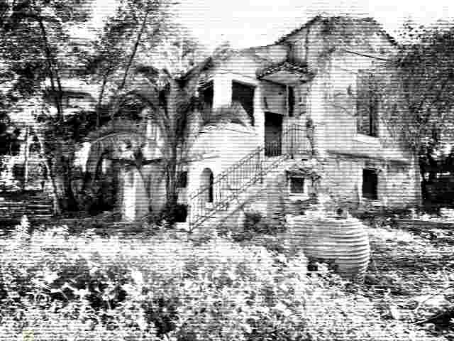

The haunted house in Chalandri and Gina Bachauer’s secret

Hidden among the quiet streets of Chalandri stands an old mansion surrounded by mystery and whispers of the past. Once the home of the famous pianist Gina Bachauer, the house is said to hold a dark secret. In 1976, Bachauer died suddenly, leaving behind a home filled with memories, music and unanswered questions. Since then, strange stories have surrounded the abandoned mansion. Some claim that piano melodies can still be heard echoing through its empty rooms late at night, while others speak of a mysterious woman dressed in black wandering through the garden. Locals believe her spirit never truly left. Perhaps she is still there, playing her final melody, waiting for the night her music will be heard once again.